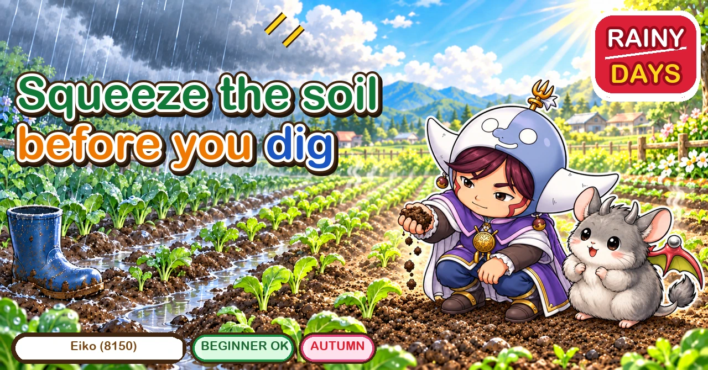
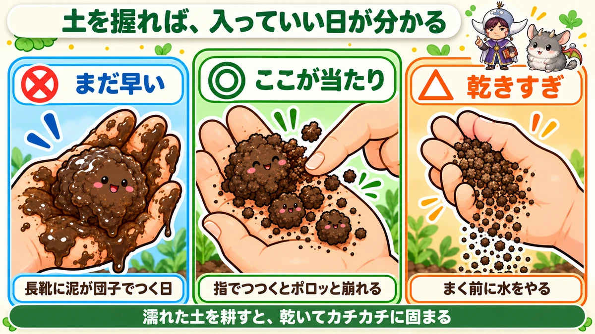
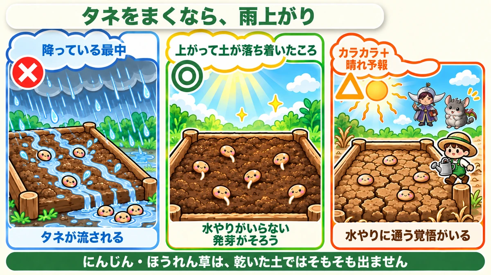
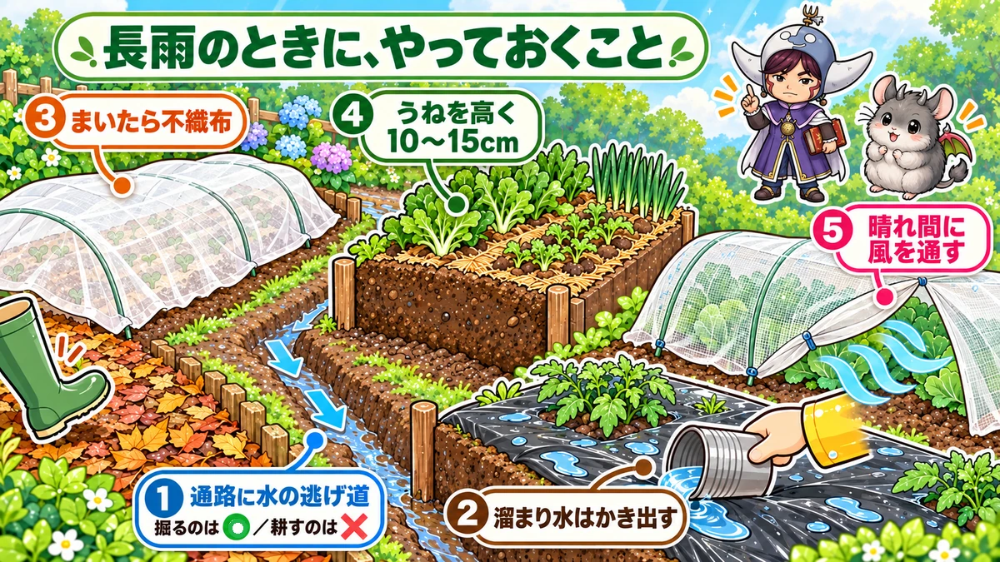

Can you garden in the wet? 🌧️ Only the soil-moving jobs are off limits

🗨️ "Am I not supposed to go out to the garden when it's wet?"
🗨️ "My only day off and it's raining — I want to sow today."
🗨️ "After the rain the soil set like concrete and nothing came up."
Hello, I'm Eiko. Eight years of growing vegetables organically and without pesticides, and a teaching licence in science.
This comes up constantly — especially in autumn, when a front parks itself overhead and the forecast is rain all week. And the sowing dates don't wait.
The point, up front:
What rain ruins is the soil-moving jobs, and only those.
Sowing and planting are actually better after rain. Separate the two and a wet forecast stops being alarming ☺️
Split the jobs in two
Whether you can work in the wet isn't decided by the crop. It's decided by the type of job.
- Soil-moving: digging, making beds, cultivating between beds, earthing up, digging at the base of plants
- Not soil-moving: sowing, planting, putting netting on, setting canes, harvesting
Only the first group is damaged by rain.
Because you're kneading it
Digging or treading wet soil kneads it — think of working clay in your hands. Kneaded clay sets hard when it dries, and soil does exactly the same.
And soil that has set does not readily recover within the season. Seedlings can't push the surface up and roots can't go down. One day's work can write off a bed for a whole season.
Conversely, everything else is fine as long as the rain has stopped.
One handful tells you

What this diagram says （図解の文字）
- Squeeze the soil and you know whether you may go in
- × still too early — the day mud sticks to your boots in lumps
- ◎ this is it — poke it with a finger and it crumbles apart
- △ too dry — water before sowing
- Dig wet soil and it sets like rock when it dries
Forget the forecast. Look at the soil.
Take a handful from a bed and squeeze it:
- it sticks to your palm and stays in a ball when you open your hand → too early
- it holds together, and crumbles apart when you poke it → this is the one
- it won't hold together at all and runs through your fingers → too dry; water before sowing
Aim for the middle one. It's an old test, and it needs no equipment.
As a rough guide, two or three days after substantial rain — but soil type and aspect change it, so decide with your hand.
Since learning this I squeeze a handful before doing anything. On days when mud sticks to my boots in lumps, the soil never crumbles — and on those days I go home without walking on the beds.
After rain is the best day to sow

What this diagram says （図解の文字）
- If you're sowing, sow after the rain
- × while it's raining — the seed washes away
- ◎ after it stops, once the soil has settled — no watering needed, and germination is even
- △ bone dry with sun forecast — you'll be committed to daily watering
- Carrots and spinach simply won't germinate in dry soil
The reverse case. Rain is treated as the enemy, and for sowing it's an ally — because germination runs on water.
Some crops will not come up dry:
- Carrots — about two weeks to germinate, and damp throughout. Sown into dry soil they essentially fail
- Spinach — the same; it stops if the water stops
- Mustard greens, turnips, chrysanthemum greens — fast to germinate, so the first few dry days are fatal
Sow those into dry soil and you've committed to a daily trip with a watering can, which is unrealistic alongside a job.
So I aim for the day after proper rain, once the soil has settled. No watering, and even germination.
In summary
- While it's raining — ✕ (you can't work the soil, and seed washes away)
- After it stops, when a squeezed handful crumbles — ◎
- Bone dry with more sun forecast — △ (possible, with daily watering)
"Sow just before the rain" — I don't
You hear it often. Two reasons I avoid it: forecasts are wrong, and you end up watering anyway; and heavy rain straight after sowing washes the seed away.
Rain after sowing does three things
This is the dangerous part. Rain after sowing is worse than rain before it.
① The seed washes away
Freshly sown seed has no roots — it's just resting on the soil. Heavy rain carries it downhill. You sowed a line and the seedlings come up in a clump at one end of the bed.
② The surface caps and the seedlings can't get through
Wet, dry, wet, dry, and the very surface sets into a thin crust.
Shoots moving below can't lift it. Dig and you find a white shoot bent over on the underside of the crust, stopped.
When you see it, break the surface gently. I scratch it with the end of a mulch pin. A finger works too — but surface only, or you cut the shoots.
③ Standing water rots seed and roots
Soil contains channels for water and channels for air. Filled with water, the air side ceases to exist.
Seeds and roots breathe, and without oxygen they die. Five days of rain and seed rots where it lies; newly planted seedlings go black at the base and collapse.
The one job you may do while it's still wet
I've said stay off the beds. There's an exception: getting water out. Do that while it's still wet, because the damage grows while you wait.
- Water pooling in the paths → cut a shallow channel towards the lower end. 10 cm is plenty; you're making one escape route
- Water lying on mulch → scoop it off. Hands or a tin will do. Where it pools repeatedly, make a small hole and let it drain into the bed
- Water in the planting holes → get it out. (Water in a hole where a seedling is up is not a problem)
The distinction: cutting a channel is fine; cultivating the path is not. Digging is for moving water; cultivating is for loosening soil — different purposes. Cultivate a wet path and it dries harder than before, so the drainage gets worse.
Five things for a long wet spell

What this diagram says （図解の文字）
- What to do during a long wet spell
- ① an escape route for water in the paths — digging ○, cultivating ×
- ② bail out standing water
- ③ fleece over anything newly sown
- ④ beds raised 10–15 cm
- ⑤ let air through during the bright spells
- Cut an escape route for water in the paths — dig, don't cultivate
- Bail out anything standing, especially in mulch holes
- Lay fleece over new sowings — it breaks the force of the rain so seed stays put and the surface doesn't cap
- Raise the beds 10–15 cm
- Open things up and let air move during any bright spell
The science: why treading hardens soil 🔬
Good soil isn't solid. It's crumbs with gaps between them, and those gaps are what hold air and let water through.
When soil is wet, water films coat every particle and act as a lubricant. Press down and the particles slide past each other and pack together instead of holding their arrangement.
The gaps close. Then it dries, and the particles are left locked in that packed arrangement — which is the board you dig up in winter.
Dry soil doesn't do this: without the water film the crumbs don't slide, so they resist and keep their structure.
The same footstep, on the same soil, does completely different things depending on how wet it is. Which is why the test is a handful of soil rather than a weather app ☺️
To sum up
- ✅ Rain rules out soil-moving jobs only
- ✅ Working wet soil kneads it, and it sets hard for the season
- ✅ Squeeze a handful: crumbles when poked = go ahead
- ✅ Roughly two or three days after rain, but decide by hand
- ✅ Sowing after rain is better — no watering, even germination
- ✅ Carrots and spinach won't germinate in dry soil
- ✅ Don't sow just before forecast rain
- ✅ Rain after sowing: seed washes away, the surface caps, standing water rots it
- ✅ Break a capped surface gently, surface only
- ✅ Bail out mulch holes — it takes a minute and saves the plant
- ✅ Draining water is the one wet-weather job; dig a channel, don't cultivate
- ✅ Long spell: channel / bail / fleece / raised beds / air in the bright spells
- ✅ Wet soil compacts because water lubricates the particles
You don't have to do all of it. Next time it rains, go out and squeeze one handful of soil. That single action decides whether today is a gardening day 🌧️
Thank you for reading!